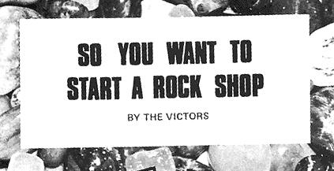
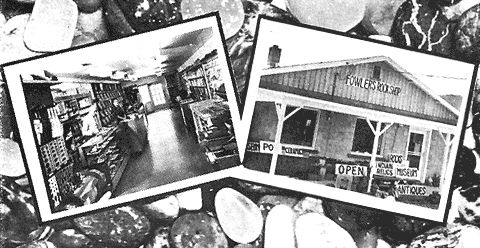
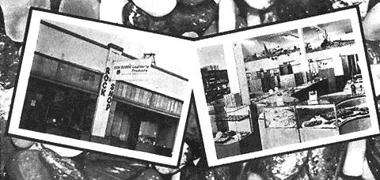
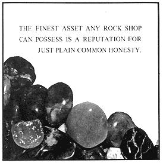
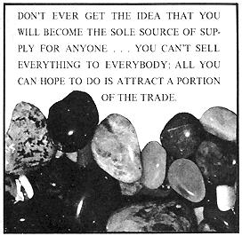
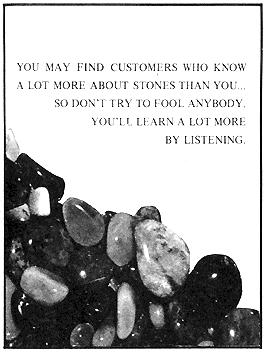

So you want to start a rock shop . . . or do you? Maybe you're dreaming instead of a little candle business you can operate out of your home . . . or a leather shop . . . or you've decided to put your painting on a paying basis . . . or you're expecting an out-of-print book service to finance your break from the 9-to-5 drag. No matter. Be it a home mail-order operation or store-front employment service: The bookkeeping, management, buying, markup, discount, zoning, credit, insurance, tax, advertising and other problems of a family business are much the same. The methods that work for a rock shop will also work for the sandal maker, pet shop and health food store . . . and the place to get those methods is from a successful small shop proprietor.
Arthur E. Victor, assisted by his wife, Lila Mae Victor, is that successful proprietor. The Victors, until their recent semi-retirement, operated one of the world's better known "rock hound" emporiums. Their two books, GEM TUMBLING AND BAROQUE JEWELRY MAKING, ($2.00 and now in it's 18th printing) and SO YOU WANT TO START A ROCK SHOP ($2.00 and in the 5th printing) have helped hundreds of other enthusiasts establish their own flourishing rock shops.
The following excerpts of the more general information from SO YOU WANT TO START A ROCK SHOP should help anyone start almost any small business on a sound basis. For more details on the specifics of establishing a rock shop, get both the Victor's books from: THE VICTORS, 1709 South Cedar, Spokane, Washington 99203.
Hundreds of thumbnail-sized rock shops start each year and other hundreds quit or fail but so do the "failure" rates of all businesses make dismal reading. Statistics are against success and the saddest statistical facts are that most failures could have been prevented. Poor planning, no market analysis, insufficient capital and lack of technical knowledge are all contributing factors but the amazing thing is that most small business men are not aware of their lack of "know how." This lack of knowledge is not a sin (who among us can assert he knows EVERYTHING about anything.) But he who knows not and knows not that he knows not, is headed for serious trouble and in a hurry.
Rather than belabor the reasons for failure, let us take the positive approach. Many Rock Shops prosper and their proprietors are happy, contented people-some have grown to national prominence. And to the best of our knowledge every one started in their back yard or glassed in front porch, even as you and I.
If this little book can help you plan your enterprise or at least give you some indication of the type and kind of knowledge needed for success, it will have served its purpose.
First, is capital; money to start the enterprise; to buy the stock, carry the overhead costs, until sales develop to a point where income is greater than output. Certainly this amount will vary depending upon your particular circumstances but there must be SOME money. Probably, five years will pass before you can take money from the business. During that time every dollar of profit will be re-invested in building up the stock and improving the shop.
Then, there is your knowledge of the Lapidary field or a specific field if you intend to specialize. You should know the "jargon of the trade"-the descriptive terms needed to order supplies and you must know what services and supplies your prospective customers will expect you to carry in stock. You must know something of business methods, bookkeeping, stock control and profit and loss statement. This bookkeeping knowledge is readily available to you and can be easily acquired-but the technical "know how" is not standardized and is not available except by long and patient digging and we mean literally and figuratively.
Let us "personalize" this technical knowledge point by applying it to your own activities. Suppose you are a first class machinist (or an accountant or printer or almost any occupation) and you have your own little shop. Your friend drops in and says something like this-"I have sold insurance for thirty years but I have always wanted a nice little shop like this. I have saved a few bucks. What do you think about me starting a little shop like yours?"
Hobby shops and Rockshops in particular are unlike any other long established retail stores. Rockhounds are not in a class with the person who tries every shoe in the shop for an hour or so and suddenly says, "it has quit raining, I can get out on the street now." The infinite variety, and the creative artistry of our Rock hobby results in what we might call "slow selling." The absorbing interest often results in much delightful conversation with low dollar volume of sales.
So check your own personal characteristics-your temperament. Do you like to visit? Do you enjoy meeting new people? When you meet a stranger can you think of something to say that will put him at ease and start him talking? Can you be genuinely interested while Joe Blow tells you for an hour how he found that big Geode up on Red Top, and all the while a stack of orders to fill, letters to be answered, a dozen rings to set, etc., etc., and dear Joe, thrilled at his find, rambles on and on. How about the other members of the family? Most little shops are a husband and wife operation. Is the "other half" interested and willing to work; and will you both be content to be "tied down" with a shop?
You must establish regular and consistent open hours for the store. If you "live in the back of the shop" these open hours will not deter your rockhound friends from dropping in at all hours of the day or night.
The ideal situation would be to select an area containing a multitude of potential customers and set your little shop in the most accessible spot. For most of us that will not be possible or practical. The shop location is already established. Maybe we are starting in the family home; perhaps only one building is available in our end of town. As a result of this fixed location we must depend upon customers available to that location. Your original investment may seem small and because of this you may think that failure will not hurt very much. Once you are committed the "returning will be as tedious as the going over." The general tendency in small inexperienced businesses is to attempt to bolster an unprofitable venture with more and more resources until the drain becomes a catastrophic financial loss and failure a terrible blow to the pride.
There is nothing standardized about this rock business. If you wanted to start a drug store, pages of statistics are available. Experience has shown that a given number of people in a trade area spend so many dollars per year at a drugstore, Divide that figure by the number of drug stores and one has a rough idea of what to expect in gross sales. There will be figures available concerning density of traffic, car traffic, and buying habits. Nothing approaching this type of information is available for a rock shop. You are on your own when making a Market Analysis for your shop. If you were contemplating starting a shop you must of necessity planned to sell something to somebody. All right, who are they-is it the 100-200-300-500 rock hounds in the trade area and how big is this trade area? Will your customers be tourists or a circle of friends? Will your customers come from immediate areas or from all over town or even perhaps from the surrounding countryside? Is your place of business easily accessible to these customers? Can they find it easily? Maybe you plan to make up and sell finished jewelry. What and where are these potential customers now buying? Or are you going to fill a need not now supplied by anyone? Are there competing shops in your trade area? Suppose you are able to compete successfully and divide the customers with your competition--is there enough business for all shops or will your opening develop a session of cutthroat competition and as a result no one will make a profit, or do you anticipate a growing market with room for all to expand?
Find out about zoning ordinances. If starting in your residence, you may discover restrictive regulations as to type, size and character of business permitted. There will be limitation on signs and outdoor displays.
Many books have been written about Business Management. Entire college courses are designed as Business Administration. We can only hope to stimulate your interest and outline a few basic principles. Your success will be based upon a combination of knowledge and skills plus a little luck and much common sense. One important bit of knowledge is an awareness of your limitations and the will to seek help and accept guidance.
Do not be reluctant or afraid to seek competent advice. The Small Business Administration has a Service Corps of Retired Executives. As the name implies, these are successful business man who have retired, but who wish to help others. They volunteer their services at no cost to help other small business men with management problems. A call or letter to your nearby Small Business Administration office might provide you with a local experienced business man to discuss your plans for starting or problems that may disturb you after you are in business.
Your first managerial decisions have dealt with the establishment of the shop, probable growth, your own ability and capital available. Now use the market analysis to determine the kind and size of stock you will need. This will be modified by what you have on hand as an accumulation of years of hobby activity and will certainly be controlled by the amount of money you want to invest (or risk) in this new venture. Set up an account and list all the shelves, show cases, office machines, tools, signs-everything in the shop that is not "Merchandise for sale." Add to this the cash you intend to invest, this will be your capital account.
Make another inventory of all merchandise for sale. Figure this on cost or market value, whichever is the lower. To this inventory add everything you buy for sale and subtract everything you sell. Note that you have two inventories, one for items not for sale and another for those items that are for sale. Keep these separate because at income tax time they will have entirely different effects on profits and depreciation figures.
The amount of goods you buy will be governed by the amount of money you have to invest, the stock on hand when you started and the estimate of sales volume as determined from your market analysis. No one but you can make the decisions. No two situations will be identical, but here is a good point to determine if you have something in which you can excell in offering to the public. Try to find some "Specialty" that you can advertise as unique to your shop. Henry Kaiser said of his success: "Find a need and fill it." Gauge your stock both as to quality and variety to fill a need of your expected customers.
From your market analysis you have estimated gross sales and decided upon the kind of variety of merchandise needed. You also have an estimate of the overhead operating expense-and don't forget you must maintain your living expenses too. (One rock shop proprietor advised us to say, "For the first three years there must be two incomes-one to live on and one to support the shop.")
All your life you have been buying as a consumer or an investor. Now you are buying for immediate re-sale at a profit (you hope) and an entirely new type of consideration is required. As a merchandiser you must sell your stock and buy more stock and sell that and buy more, each time taking your mark-up as gross profit. Thus the more times you "turn your stock" the more profit on the original investment.
Let us illustrate how important this idea of turnover becomes especially if you have only limited capital. Suppose you use $75.00 of capital money and buy $75.00 worth of merchandise to be sold for $100.00. It arrives and you sell it. $75.00 is used to replace the merchandise and $25.00 is considered gross profit. If you do that four times in a year you will have a gross profit of $100.00 on a capital investment of $75.00.
Some shops may approximate the operation of a small community hardware store. These stores have a record of perhaps a three-time turn over of stock. Thus their stock value would be one-third the annual sales. The mark-up on most hardware items is about the same as lapidary equipment and supplies and a three-time turnover seems to be reasonable in determining profit from the operation. If turn over runs to four times per year perhaps larger stock purchases would be indicated with subsequent reduction in unit costs. If the turnover drops to one and one-half-perhaps profit would be improved by smaller purchases and a reduction of stock.
As a very rough estimate and guide you might consider your stock value should about equal the first year's gross sales.
Business management is much more than purchasing stock and watching inventory. It includes pricing, checking costs of operation, alertness to change and constant attention to a multitude of details. We have enlarged upon stock control because it will be one of your first considerations and seems to be a source of trouble to most small inexperienced shops.
"Markup" is a percentage of purchase price and "discount" is a percentage of selling price. On any one item the actual dollar figure will be identical but the percentages will be different. As an example, an item costing $75.00 is to retail at $100.00. The gross profit will be $25.00. Figured as markup this $25.00 is 33-1/3% of the cost of $75.00 so we say the "markup" is 33-1/3%-This $25.00 gross profit is 25% of the selling price of $100.00 so we say you purchased at a 25% discount.
The term "retail price" or "list price" as used by a wholesale firm have the identical function, that is, a figure to use when determining discount, but the term "list price" may or may not represent an accurate or reliable retail price.
As an example a $10.00 retail price item (list price) may be quoted at wholesale something like this. Retail (or list) $10, 1 to 6 items, 15% discount; 7 to 11-20%; 12 to 24 at 25%; over 24 at 30%.
There is good reason for this change in discounts as you will soon discover. Let us take an extreme example. Your customer wants a cap and jump ring to fit a special stone. For one-half hour he tries every cap in the place on the stone and finally makes a great decision. You charge him ten cents for the cap and five cents for the ring. You put them in an envelope, it cost money, and write up the sale on sales slip and that cost money. The customer may say something about the high price of findings or may wonder why you don't get a horse and a gun. You sold those items at over 1000% mark-up but you lost money on the transaction. The next customer wants a gross of caps and an ounce of jump rings. You charge him $5.00. The sale is made in ten minutes. Your mark-up probably was 35% but you made $1.50 gross profit.
Mark-up must be adjusted item by item and also by volume or size of individual sale. The varying mark-up must average out 25% to 30% of gross sales or you will be in serious trouble.
Such standard items as picks, saws, machinery, grinding wheels and grits, sanding cloth, have a suggested retail price established by the supplier. Don't cut these prices. His experience, much broader than yours, has shown that these suggested retail prices are the minimum that must be charged to produce a reasonable profit. He is just as interested in meeting competitive prices as you are, but he also wants you to make a profit so you can grow in size and become a permanent outlet for his merchandise. We keep repeating that gross profit is not net profit. It takes net profit to buy groceries. Gross profit is up near the middle of the balance sheet-that little figure called net profit down in the lower right hand corner is the important one.
Do not write out your orders in the form of letters and intersperse your requests for merchandise with comments about the weather or your latest attack of arthritis. Use a separate letter and use a printed purchase order form for ordering. Number these purchase orders and keep a copy. You may specify method of shipment and delivery date.
When opening an account with a supply house don't just scribble a note on any old piece of paper and say "Send me so many of such and such. My state tax number is so and so." Write a nice letter on good printed stationery. Tell him who you are, something of your volume or how much you anticipate purchasing from him. Give a reference such as your bank. Be sure to include a state or city tax or license number if required in your community. You will be surprised at the friendly helpful letter you will receive in return. You may know quite a little about him but he knows nothing about you-so introduce yourself. Along this same line-a word of praise or appreciation for a favor or a good service will prove to be most helpful.
Word travels fast by grapevine and the new, inexperienced rock shop will soon be visited by all the local traders, all the truck sellers and tailgaters within reach. They will offer you the 'last of this available' or a special hand-picked something or other. Purely and solely to help you, they will even be willing to trade some of their stone for THEIR SELECTION of your stone. Unless you know what you are doing, don't do it!
First class agate is continually rising in price as the demand increases. You may be shocked to discover agate you purchased five years ago at fifty cents per pound retail, now quoted at $1.35 per pound wholesale in 100 pound lots. Suppose you buy 100 pounds of this $1.35 stone. How do you price it to your customers who buy one-half pound to five pounds at a time?
Let us follow that stone and see what happened to it before you got it. First, it was mined or picked up and sold to your supplier as "mine run" or "field run" at perhaps thirty cents per pound.
Suppose this supply house bought 1000 pounds for $300.00. To make a reasonable profit it should be sold somewhere near $750.00 which would be $75.00 per 100 not $135.00. But this was "mine run" so it must be graded-perhaps it grades out something like this: 250 pounds hi-grade, 300 pounds medium grade, 300 pounds poorer grade and 150 pounds country rock worthless stuff. Depending upon many factors the supplier might elect to reach his $750.00 selling price by pricing the grades as follows: 250 pounds hi-grade, $1.35; 300 pounds medium grade, $1.00; 300 pounds poor grade at fifty cents. This would bring in just a little over the $750.00.
Now you have that 100 pounds of stone. It cost you $135.00 plus freight and you (as your supplier did) decide that you must sell it for $275.00 (in the little sales) to make a reasonable profit. A few kinds of stone may be of such uniformity that you could throw the entire 100 pounds in the bin for customer selection at $2.75 per pound. Many, many kinds of stone, even well graded stones, will vary in desirability by color, markings or shape, stone by stone. Such a stone if uniformly priced for customer selection would probably result in a fourth of bin remaining of unwanted stones. To lower the price on this residue is to lose money and no customer is happy to return to your shop and find the price reduced after he made his purchase.
Two things can be done to alleviate the problem of residue stone. First and least desirable, simply raise the price and finally dispose of the rejects at a bulk price or cut or tumble it yourself. The second and more desirable method would be to price the stone piece by piece-to a total of that $275.00.
This way the customer has the choice of selecting two stones of equal size-one a perfect stone for $1.50 the other imperfect at $1.00. He may elect to take the poorer stone but he feels good about it. You have been fair with him and all the subsequent customers who will pick over the pile.
Don't.ever, ever put a per pound price on a pile of stone and when a customer picks out a particularly beautiful stone tell him "that is too good a stone to sell at the regular price, I will have to have $3.00 per pound for that one." If he doesn't do you bodily harm on the spot you can be sure he will never return.
Now another thing to watch, particularly as you start, is this pile of stone in the back yard. Collected over many years, the supply of jewelry bragging rocks, mineral specimens, chrystals and whatever else you may have accumulated is now called merchandise for sale. You may consider a sale at any price virtually clear profit because it cost very little in money. Watch it! That stock will have to be replaced at current wholesale prices and unless you know your prices and recognize value you may find you have sold it much below wholesale replacement cost.
Somewhere we said something about the desirability of having a display of finished material or specimens or bragging rock as examples of the lapidary art or to stimulate interest in the hobby. If you have such a display and it is not for sale mark it plainly so the customer will know it is only for display. Don't let him unknowingly pick out a piece and ask the price only to be told "that is not for sale."
Everybody starting a shop wants to know where to buy. This information comes with experience and trial and error plus perhaps, considerable expense. Look through the advertisements in the Rock Magazines, (listed at the end of this article) . Transportation will be one of your costs of goods so select a wholesale house near you and perhaps one in another part of the country. Send for their catalogues and tell them, as has been suggested previously, who you are and what you expect to do-and always send your Sales Tax Account number and local license number. In comparing prices be sure you know the quality involved and don't send for catalogues from everybody expecting that someone will be way down low on price. Competition being what it is, you will find merchandise of similar quality somewhere near the same price wherever you buy it.
As a beginning shop your purchases will of necessity be in small quantity and limited variety. Don't scatter these little purchases throughout a dozen supply sources. Give your orders to two or three reliable firms. As you grow in volume and experience; as you learn the "jargon of the trade" and understand the quality and descriptive terms; and as you learn what merchandise your customers want-then begin to explore the possibility of finding specialized sources of supply. Buy what your customers want. Don't be governed by your personal likes or dislikes but do not compromise on quality, and, don't handle merchandise that you know will not stand up in use (even if there is customer request for it.) Findings that tarnish quickly and machinery with poor bearings, too light a construction, or poorly designed (even if low priced) will not build confidence in the reliability of your shop. You may lose a few sales but not a customer.
There are many items desirable as stock such as gold pans and tools that must be purchased from sources basically outside the lapidary field. Consult the wholesale houses via the telephone book because these items may not be advertised or available from lapidary supply houses and can probably be purchased locally with no transportation charges involved.
One final word about buying. Pay your bills when due; conform to the wholesalers sales policy; and take all cash discounts.
A license is a permit or an authorization and may carry with it requirements of public health, safety, sanitation, fire protection and in some instances technical and financial qualifications.
The fee is usually small and paid each year upon renewal. A license may be cancelled for cause.
Tax Numbers or as they may be called "Registration Certificates,°" are usually issued for the duration of the business and are not renewed each year. Sales taxes vary by locality and may include the state, the county, and the city. Call the various taxing agencies listed in the phone book or call your local Better Business Bureau or the Small Business Administration. Some states and cities levy a tax upon all business and occupations, usually upon total volume regardless of profit. All these taxes will have rules which you must follow and keep records subject to audit by the taxing unit. Be sure to tell the taxing unit the details about your proposed shop-what you will be selling, wholesale and retail and some indication of your expected volume. The volume and nature of your business may determine the reporting period which may be by the month or the quarter or in some small shops by the year.
Sales taxes are not designed to become a tax upon a tax. The consumer pays an excise tax only once, when he buys from the retailer for his own use and ultimate consumption. Goods purchased for re-sale pay no excise tax.
Your wholesaler is not a policeman. He will not follow an item of merchandise into your shop and check on whether or not you use it or sell it, or whether you collect the correct tax but (and this is MOST important) he must be assured that you understand the terms of the sale; that YOU KNOW OF YOUR OBLIGATION TO COLLECT THE TAX according to the law and that this obligation is a PART OF THE CONDITION UNDER WHICH HE SELLS THE GOODS. Furthermore, he wants that "certified" in writing.
Regardless of whether or not he requires you to sign a lengthy statement or only asks for your excise tax account number of if you only state on an order "for resale; tax number so and so" you have obligated yourself to collect the excise tax. Ignorance of this law is no excuse and you may be subjected to a lot of embarrassment, delinquent penalties, heavy fine and even imprisonment. You might discover yourself "breaking rocks" not polishing them!
You'll find it to your advantage to establish a credit standing from the very start. Check the telephone book and call your nearest Dun & Bradstreet office. A credit reporter will stop by and ask questions about your business experience, assets (cash and property; insurance) and your liabilities (debts, mortgage obligations.) Tell him all the facts. When you identify yourself to a new supplier to obtain credit, you can then refer him to Dun & Bradstreet.
Credit is essential to business growth; few businesses can afford to operate on a strictly cash basis. You'll find a credit rating valuable in establishing new sources of supply and in keeping open the flow of goods to your business.
How much credit should you grant to customers? The answer is none-Do a cash business.
One of the hidden costs of doing business is a little matter of insurance. Probably you now carry fire, theft and personal liability You may find these policies (in fine print) exclude and do not cover any type of retail business activity. So if in your own home or separate business building, now open to the public, you will need storekeepers liability, fire and theft on goods for sale, and personal liability. This broad coverage may cost you from $1.50; to $2.00 per day for your home and stock but you can't afford to take the chances of defending a one hundred thousand dollar law suit for damages to a customer who fell on the icy sidewalk or fell through a glass show case.
In the days before sales tax, business and occupation tax, and income tax if we came to the end of a year with a few bucks in the bank, the shelves stocked and the bills paid, we felt pretty good and it was no concern to anyone else.
Now, every penny of expense must be recorded in its proper place-goods purchased for sale, repairs, supplies, advertising, labor, transportation, office supplies, taxes, rent, power, light, telephone, interest, travel and more. Every penny taken in by sale, trade or labor, interest or rent must be classified as to source and then reclassified as to wholesale, retail, subject to local or state (or both) sales tax. It may have to be classified again to meet a varying business and occupation (B & O) tax on different types of services or goods.
Sound complicated? Well, it is, and unless you are thoroughly familiar with the accounts needed, consult a good accountant, or tax consultant. He will set up a comparatively simple system by which these records can be maintained. We cannot emphasize too much the necessity of doing this WHEN YOU START. Don't wait six months or until the end of the year. You will find you can't remember when you acquired that big saw or whether you had 500 or 1000 pounds of a certain rock when you started. Another bookkeeping item is a ledger book for accounts receivable. You may try as hard as you can to do a full cash business but there will be people who owe you money-maybe only for a few days or until they receive an invoice. Record these in the ledger and keep it accurate.
All this bookkeeping is really a blessing in disguise because from these records you can tell how your business is progressing. Trouble spots will show very soon and corrections can be made. Accounting has been called the voice of a business-listen to it.
Bookkeeping services are available for hire and the fees are not excessive. These services are flexible and can be adjusted to suit your source documents (sales slips, bills, invoices, cash receipts, etc.) and using them as the record of original entries to a complicated and sophisticated system which would involve all of the multitude of books, ledgers and account classifications needed; or arrangements (and training) might be provided for the average person to maintain the records himself, with an occasional audit and annual summary by the expert Accountant.
Don't go overboard. All you will need is a comparatively simple, single entry system. Until you grow into a $100,000 business you will not need the complicated accounting systems used by large corporations.
Start this by identifying the sale in the left hand column, either by name or sales number. The next entry would be the total cash received including all taxes. The next column heading might be "State Sales Tax Collected," and the next "City Sales Tax."
At the end of a tax paying period the column totals will give the information needed. On a separate sheet under these same column heads, the monthly totals can be entered consecutively to make a convenient month to month and year by year record for managerial use.
These sales records must be accurate and balanced at the monthly or quarterly tax paying period and you will be so much interested in "How the business is doing" that you will have an incentive to take the time each day to keep them up to date.
No monthly or quarterly reports are required of expenditures. Once each year, at income tax time, you will be required by law, to determine these figures. There is a great tendency to neglect this most important part of your records. Expenditures paid by check are not much of a problem. You have the check stub and always the cancelled check. Questions might arise as to the purpose of expenditure, but the expenditure is on record.
The cash expenditures are the neglected and forgotten items that can cost you real money come income tax time. Be sure to keep the invoices or make a memoranda slip for every out-of-pocket purchase; list stamps, light bulbs, fuses, a quart of paint, wrapping paper, travel expense, parking, etc.
As with the record of sales, these expenditure totals, by month and years, can be transferred to a summary sheet and as the months and years go by will be invaluable for comparative purposes and as a tool of management.
Advertising is designed to draw BUYING customers to your shop. In this lapidary business we have the problem of promoting the acceptance of the hobby in addition to drawing customers to a particular shop.
Considering our competitive status we should support the Gem Shows in our trade area and provide interesting displays of the lapidary art at every opportunity, not only for our Rockhound customers but for the information of the general public. Provide the local newspapers with human interest stories and pictures of outstanding accomplishments of your rockhound friends. Don't push yourself or your shop into the story. Reporters are under constant pressure from publicity seekers and they will cut the whole thing if they have the slightest idea you are trying to obtain free advertising. Take advantage of every opportunity to build good will for the Rock hobby.
A listing in the classified section of the telephone directory is a must. Perhaps two or three listings such as Lapidary, Agates and Jewelry would be advantageous.
Advertising is another of your managerial duties which requires planning, direction and purpose to fit your individual conditions. Don't plunge in spasmodically and intermittently, with an advertisement now and then. Plan your campaign; set up a budget for the year. (Some retail stores spend 3% gross income for advertising.)
Decide what people you want to reach and what goods or services you wish to sell. Your budget will be small and space limited so don't try to sell everything and spoil an ad with too much detail. Elsewhere we have suggested a specialization in one or two items or the development of a unique product to make your shop distinctive-here is a chance to "cash in" on that specialization. Use it in your advertising.
Advertising in our Rock hobby magazines is effective over long periods of time. Those magazines are saved and read and re-read. You will be getting replies from advertisements two and three years after they are issued.
Look through the Rockshop ads and pick out one that appeals to you. Then copy its style and layout. Most of the advertising outlets will help lay out your ad and make suggestions.
Advertising is a full time profession requiring alertness to new opportunities and new techniques but here are a few do's and don'ts that may be helpful.
Don't ever, ever tell a half-truth or misrepresent in any way.
Don't try to say too much-keep it simple.
Don't use stock phrases, cliches and stereotype phrases.
Do try to make the ad interesting; easy to read.
Do try to make answering easy. If you are selling mail order make your price post-paid if at all possible.
Be sure all conditions of sale are listed. If there are minimum or maximum or sizes or number list them distinctly.
Don't brag or boast. Your item may be excellent, large, complete, first grade, but be very cautious with words like THE BIGGEST, THE BEST, THE ONLY, WORLD FAMOUS.
Do stick to your advertising budget. Set aside a few dollars for emergency use for unexpected opportunities.
Keep records of your advertising expenditures and compare with sales and profits. You will learn which type of advertising brings the best results and eventually you will be able to make the best possible use of the advertising outlay.
Perhaps this is a good place to mention books and magazines, not only as profitable merchandise for sale but as help in building public knowledge and increased interest in the hobby. Always carry a good supply.
Another item of good will and possible profit is formal class instruction in the lapidary art. You should not have secrets about how to cut, polish and mount stones. Encourage classes in all phases of the rock hobby under whatever sponsorship.
A hobbyist will visit more stores and spend more time negotiating the purchase of a $10 gadget than he will in spending $500 to put a new roof on the house.
Rockhounds are no exception. Don't ever get the idea that you will become the sole source of supply for anyone. Your customers are going to visit your competition and they all read and study the catalogues. You can't sell everything to everybody; all you can hope to do is attract a portion of the trade. There is no need and you are not obligated to advertise your competition but if Joe Blow wants an 8" sawblade and you don't have one in stock, send him down the street or better, call up your competition and tell him you are sending a man to him for a saw blade. Your first consideration is the convenience of your customer not to prevent your competition from selling a saw blade.
If a customer asks about other rock shops, tell him where they are and say something good about them. If you can't think of anything praiseworthy say something about the lovely shrubbery or the nice picket fence or the lovely pink paint on his store front. Whatever you do don't knock competition-it's a deadly boomerang.
Try to be something above just another Rock Shop. Specialize in something; become known as the shop with the big display of bookends, or findings, or maybe good slabbed material. In other words excel in one or two items. Don't try to specialize in the same thing the other fellow features. For example, if your competition has a big and beautiful supply of mineral specimens don't try to outdo him, but feature something else like findings-have a complete line. You may soon have him sending customers to you for findings and you will be sending customers to him for specimen material and both of you will be doing a nice business. Thus, you will find more and more ways to cooperate to build good will.
As the run of the mine Rockhound you probably helped many people identify their finds and discussed at length locations and hunting areas. Now as a rock shop proprietor you will discover that activity is increased a hundred times.
Don't consider it a profitless waste of time. Remember back when you started rock hunting. Perhaps you can recall those who helped you and haven't you had a warm spot in your heart for those people-you may also remember the gruff "That is nothing but junk" answer that others gave you.
You will find many customers know a lot more about stones than you do or they may have vast and detailed knowledge of a specialized field, so don't try to fool anybody. You will learn a lot more by just listening.
From these beginners who seek your help will come the customers for machinery and supplies in the years to follow and don't forqet a satisfied friendly customer is your best advertisement. A dollar's worth of time spent to make a friend of a potential rockhound may be far better advertising than a $10.00 ad in a magazine.
Shakespeare said it-but Bill lived long before these days of high pressure selling and psychological advertising. Give a little thought as to how your shop name will sound to a complete stranger. All your friends may call you Fred or Jack or Pinkie but how many are there with similar names. Even the most common names of Smith or Johnson are better than a first name. Smith Brothers made a cough drop famous-would Fred & Joe's cough drop have been as effective as Smith Brothers?
Ordinarily thumbnail-sized operations should take the name of the owner with one, or at most, two descriptive words. Smith Agates, Smith's Lapidary Supplies are good. Smith's Rock Shop and Lapidary is too long. Now if you have some big long unpronounceable name, even though it be a proud name carried back to the Revolution or the nobility in the old country, better leave it out of the title and call yourself some short combination of descriptive terms such as Lapidary Supply Company or maybe make up a word or name from some of the syllables in your own or your wife's name; or the initials of say Katherine and Sylvester might be the K & S Rock Shop; or Frances and Thomas might be combined as was done to make the well known Frantom Lapidary Company.
We never know what the future growth will be so select a name suitable for use if your business grows beyond its little circle of friends or the city or state.
The finest asset any rock shop can possess is a reputation for just plain common honesty.
Describe your merchandise truthfully. Your customer may have little knowledge of values now, but he will eventually learn. You may think you are a "smart business man" when you sell someone a fifty cent stone for one dollar, but that little trick may cost you the sale of a $400 saw at some future date when that customer discovers he was "taken". If he does come back he will examine every purchase with a cautious, suspicious attitude.
Don't "over sell" a customer. Don't try to sell him ten pounds of expensive polishing oxide when you know he will not use two pounds in a year. And don't reverse the process and "under sell" him. Don't tell him the 12" slab saw you have in stock is adequate to cut the book ends he wants from those big petrified logs.
Know your equipment and machinery well enough to be familiar with its limitations as well as its strong points. DO NOT SELL MACHINERY OR MERCHANDISE UNLESS YOU ARE WILLING TO SUPPLEMENT THE MANUFACTURER'S GUARANTEE WITH YOUR OWN REPUTATION.
The small community rock shop for whom this book is intended must depend upon the repeat customer-the fellow who spends five, ten or fifteen dollars a month and occasionally buys a piece of machinery.
A repeat customer only returns because of his confidence in your advice and guidance and in the assurance he is getting his money's worth in quality.
Another point, so many of us have such poor memories that we should stay very close to the truth at all times.
CONCLUSION
Starting and developing your own business can be a most gratifying and pleasant experience and we have endeavored to encourage those who have a reasonable chance for success. On the other hand, we hope those whose only qualification for starting a rock shop is unbounded enthusiasm, will be stimulated to find a specialized field for their venture.
To those of you not in business we hope we have given a little insight into the problems and frustrations of the Rock Shop operator to the end that you may be a little more tolerant of their "shortcomings" and perhaps a bit more appreciative of the fine service so many are providing.
We hope we have revived the memories of some of the suppliers, the wholesale, the manufacturer, the importer. Recall those few short years ago when you, too, considered an order for ten gross of caps, 100 pounds of stone, or a slab saw as a major decision, requiring a consultation of the entire family and a long look at the bank balance. These are little shops now but some of them will grow and they will grow because they fill a need for friendly helpful service.
Earth Science Digest
P. O. Box 550
Downer's Grove, Illinois 60515
Gem & Minerals
P. O. Box 657
Mentone, California 92359
The Lapidary Journal
P. 0. Box 2369
San Diego, California 92112
Rocks & Minerals
Box 29
Peekskill, New York 10566
Desert Magazine
Palm Desert, California 92260
The Australian Gemhunter
40 Seymour Ave.
Armadale, Victoria, Australia
The Australian Lapidary Magazine
Box 56
Croydon, N.S.W., Australia
American Association of Gem and Mineral Suppliers
P. O. Box 274
Costa Mesa, California 92627
Gemological Institute
of America-Los Angeles, California
11940 San Vicente Blvd.
Los Angeles 49, California
Small Business Administration
Telephone book.
|
 |
 |
 |
|
 |
 |
 |